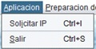
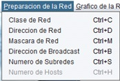
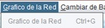
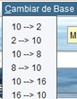
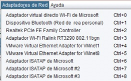
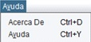

| Bienvenido a infoRed: | ||
|---|---|---|
|
Menu de la aplicación
 Menu de la aplicacion. Contiene la opcion solicitar IP, donde debemos introducir la ip para comenzar a trabajar. Contiene la opcion Salir que cierra la aplicacion.  Menu preparacion de la red Este menu tenemos diferentes opciones para trabajar con la ip introducida anteriormente. Clase de red, devuelve el tipo de red a la que pertenece la ip introducida (A,B,C,D,E) Direccion de red, muestra la direccion de red de la ip introducida Mascara de red, devuelve la mascara de red de la ip introducida Direccion de Broadcast, dicha direccion de la ip introducia  Menu grafico de red Representa con cajas y texto los equipos pertenecientes a la red  Menu cambiar de base En este menu encontraremos diferentes submenus, donde cada uno nos ofrece una opcion distinta de cambio de base de la ip introducida.  Menu adaptadores de red Este menu nos muestra todos los adaptadores de red disponibles en nuestro ordenador. Cada adaptador es un submenu que nos muestra en pantalla la información de dicho adaptador.  Menu ayuda En este menu tenemos dos opciones: AcercaDe, donde nos muestra información sobre la aplicación Ayuda, donde nos abre la ventana de esta ayuda. |